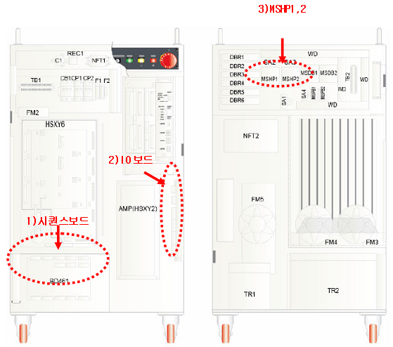

21.1. 개요
모터용 전원은 전자접촉기(magnetic contactor) MSHP1, MSHP2의 개폐에 따라 앰프(AMP)에 공급됩니다. MSHP1,2의 상태는 메인(MAIN)에 의해 조건에 따라 감시되고 있으며 비정상적인 동작을 할 경우에 E127(MSHP동작이상)이 발생합니다.
MSHP1, 2가 ON되기 위해서는 여러 가지 조건이 만족되어야 하며, 이미 ON이 되었다고 해도 여러 가지 원인에 의해 OFF될 수 있습니다. 안전신호와 같이 감시기능이 제공되는 경우에는 전자접촉기의 동작이상에 대한 원인을 메인(MAIN)이 판단할 수 있으며, 적절한 에러메시지를 표시할 수 있습니다. 그러나 메인이 전자접촉기의 동작이상에 대한 원인을 판단하지 못할 경우에는 여러 가지 점검이 필요합니다.
21.2. 원인 및 점검방법
|
1. 시퀀스보드를 교체하십시오. 2. IO보드를 교체하십시오. 3. MSHP1, 2를 교체하십시오. |
“MSHP 동작이상”의 발생원인을 파악하기 위해서는 우선 기본적인 모터전원 투입 계통을 이해해야 합니다. 모터용 전원을 앰프(Drive Unit)에 공급하는 기본개념은 다음 그림과 같습니다. “모터 ON 시퀀스”에 따라 메인은 MSHP작동명령을 주고 MSHP1,2가 작동될 때까지 보조접점을 감시하면서 대기합니다. 이때 만약 일정시간까지도 MSHP1,2가 작동되지 않으면 E0127(MSHP동작이상)이 발생됩니다. 이렇게 메인(MAIN)의 명령에 따라 전자접촉기 MSHP1,2가 ON이 되면 앰프에 AC220V의 R, S, T 3상 전원이 공급됩니다.
그림 5.64 모터전원 개폐에 대한 안전회로 개념도
1. 명령계통에 따른 보드 교체
1) 시퀀스보드를 교체하십시오.
2) IO보드를 교체하십시오.
3) MSHP1, 2를 교체하십시오.
